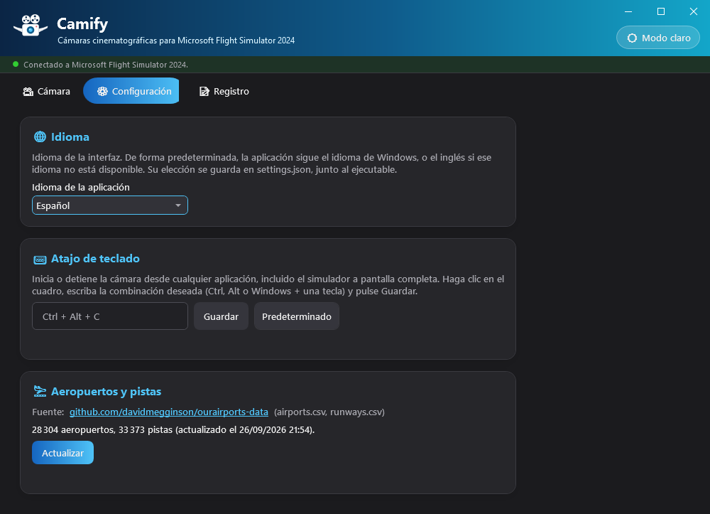
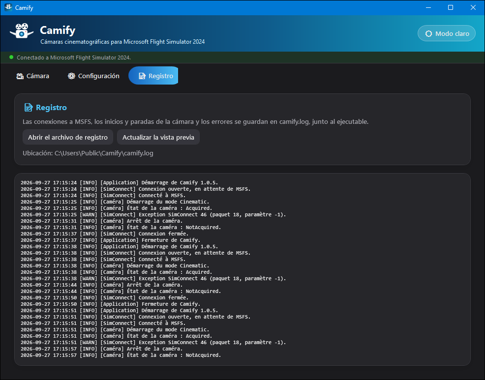

🎥 1. Presentación
Qué hace Camify y para quién.
Camify es una aplicación de Windows autónoma que controla la cámara de Microsoft Flight Simulator 2024 para filmar su avión como en el cine, mientras usted pilota o mientras el piloto automático vuela por usted. Utiliza la API de cámara de SimConnect, la interfaz oficial del simulador: no hay ningún mod que instalar en MSFS.
Tres modos de cámara, cada uno iniciado con un clic o un atajo de teclado:
- Traveling: planos exteriores lentos alrededor del avión, elegidos al azar (tres cuartos delantero, perfil, picado, vista desde abajo, persecución…);
- Flyby: la cámara espera al avión en su trayectoria, lo ve pasar y luego se recoloca más adelante;
- Torre de control: en la aproximación, la cámara se coloca junto a la pista de aterrizaje y sigue su aterrizaje.
Camify nunca pilota el avión ni graba vídeo: coloca la cámara del simulador. Para conservar un recuerdo, utilice su herramienta de captura habitual (por ejemplo la Xbox Game Bar de Windows, Win + Alt + R).
🚀 2. Instalación y primer inicio
Un solo archivo que descargar, nada que instalar.
- Descargue
Camify.exedesde la página de versiones: github.com/kairhosen/Camify-releases. - Colóquelo en una carpeta propia (por ejemplo
Documentos\Camify): la aplicación escribe sus archivos junto al ejecutable. - Ejecútelo, antes o después de MSFS 2024: se conecta solo.
En el primer inicio, Camify descarga automáticamente los datos de aeropuertos y pistas (OurAirports), necesarios para el modo Torre de control. Solo se necesita conexión a Internet en ese momento; después, los datos se actualizan cuando usted quiera desde la pestaña Configuración.
camify.db (aeropuertos y pistas),
camify.log (registro),
settings.json (idioma, modo elegido, valores de los controles,
atajo) y theme.txt (tema claro u oscuro). Si mueve el ejecutable,
cópielos con él para conservar sus ajustes.
🖥️ 3. Interfaz general
El banner, el indicador de conexión, las tres pestañas y el tema.
- Un banner en la parte superior, con el botón 🌙 Modo oscuro / ☀️ Modo claro que cambia el tema de toda la aplicación (se conserva entre sesiones);
- Una barra de estado con un punto de color (rojo = no conectado, verde = conectado). Mientras MSFS no esté disponible, Camify reintenta la conexión cada 5 segundos, sin que usted tenga que hacer nada;
- Tres pestañas: 🎥 Cámara, ⚙️ Configuración y 📝 Registro.
La aplicación se muestra en el idioma de Windows si está disponible (español, francés o inglés), y en inglés en caso contrario. Puede cambiarlo en la pestaña Configuración.


🎞️ 4. Pestaña Cámara
Elegir un modo, ajustarlo, iniciarlo — y seguir lo que hace la cámara.
Iniciar y detener
La pestaña muestra tres tarjetas de modo: Traveling, Flyby y Torre de control.
- Hacer clic en una tarjeta la selecciona y muestra sus ajustes en el bloque 🎚️ Ajustes del modo, sin iniciar la cámara;
- El botón redondo ▶ de cada tarjeta inicia ese modo. Se convierte en ■ mientras el modo está activo: un clic lo detiene y devuelve la cámara al simulador;
- Solo un modo a la vez: iniciar un modo detiene el que está en curso;
- El atajo de teclado global (Ctrl + Alt + C por defecto), recordado a la derecha del título 🎞️ Modo de cámara, detiene el modo en curso o inicia el modo seleccionado — desde MSFS, incluso a pantalla completa.
Los cambios en los controles deslizantes se aplican de inmediato, incluso con la cámara en marcha, y se conservan para la siguiente sesión.
Modo Traveling
Camify encadena planos exteriores elegidos al azar. Durante cada plano, la cámara se desliza suavemente (ligero travelling circular, acercamiento o alejamiento, zoom), con una aceleración y una deceleración progresivas; el paso al plano siguiente es un corte. Dos planos consecutivos nunca son del mismo tipo.
| Plano | Punto de vista |
|---|---|
| Tres cuartos delantero | Delante del avión, de lado, ligeramente por encima |
| Perfil | De lado, a la altura del avión |
| Tres cuartos trasero | Detrás, de lado, algo por encima |
| Picado | Por encima del avión |
| Contrapicado | De lado, por debajo del avión (solo en vuelo) |
| Vista desde abajo | Casi en vertical bajo el avión (solo en vuelo) |
| Primer plano del morro | Muy cerca del morro |
| Persecución | Detrás del avión, en su estela |
Ajustes
- Duración mínima y Duración máxima (2 a 30 s, 4 y 10 s por defecto): cada plano dura un tiempo aleatorio entre estos dos valores. Los dos controles se mantienen coherentes (el mínimo nunca supera el máximo).
- Distancia: distancia media de la cámara. Por defecto sigue la envergadura de la aeronave (un A380 se filma desde mucho más lejos que un C172) y el control muestra «(auto)». Muévalo para fijar un valor (5 a 200 m); el botón Auto vuelve al cálculo automático. Esta elección manual dura la sesión y vuelve a automático al cambiar de aeronave.
Modo Flyby
La cámara se coloca, fija, lejos delante del avión en su trayectoria prevista (rumbo, velocidad respecto al suelo y velocidad vertical), ligeramente desplazada hacia un lado. Sigue al avión con un zoom adaptado a la distancia, lo ve pasar y alejarse, y vuelve a colocarse más adelante.
Si el avión da media vuelta o gira lejos de la cámara, esta se vuelve a colocar delante de él. Con el avión estacionado, se sitúa a su lado, a la altura de una persona.
Ajustes
- Distancia inicial (100 a 3000 m, 600 m por defecto): distancia a la que se coloca la cámara delante del avión. Después, el zoom se adapta para mantener el avión encuadrado.
- Altura (−200 a +500 m, 0 por defecto): desplaza la cámara por encima (+) o por debajo (−) de la trayectoria, para variar los ángulos. Se añade una pequeña variación aleatoria en cada colocación.

Modo Torre de control
Inicie este modo en cualquier momento, por ejemplo al comenzar el descenso. Mientras el avión no esté en aproximación, se conserva la vista del simulador. En cuanto el avión está a menos de 3000 ft sobre el suelo y alineado con una pista, Camify:
- busca el aeropuerto más cercano (radio de 20 km) y la pista de aterrizaje;
- coloca la cámara una sola vez junto a la pista, a la altura de la zona de toma de contacto, a la altura de un edificio (12 m);
- sigue al avión, zoom incluido, sin mover nunca la cámara hasta que se detiene.
Este modo no tiene ajustes. Necesita los datos de aeropuertos y pistas: si están vacíos, aparece un aviso en rojo bajo la descripción.
Panel En directo
El bloque 📡 En directo se actualiza cuatro veces por segundo:
| Línea | Contenido |
|---|---|
| Aeronave | Nombre de la aeronave cargada en el simulador |
| Envergadura | Envergadura declarada por la aeronave y tamaño usado para el encuadre (acotado si la envergadura es desconocida o anómala, por ejemplo en un helicóptero) |
| Cámara | «Vista del simulador», «Controlada por Camify», «Tomada por otra aplicación» o «Desactivada en las opciones del simulador» |
| Estado | Lo que hace el modo: plano en curso y cuenta atrás (Traveling), distancia de la cámara (Flyby), aeropuerto, pista y distancia al eje (Torre), o motivo de una parada |
Paradas automáticas
Usted siempre mantiene el control: Camify se detiene y devuelve la cámara al simulador en los siguientes casos, con el motivo indicado en el estado.
- Cambia la vista en MSFS (tecla de vista, joystick, menú de cámara…): Camify lo detecta y se detiene al instante;
- se pierde la conexión con MSFS;
- la cámara ya la usa otra aplicación;
- las cámaras de complementos están desactivadas en las opciones del simulador;
- se produce un error (detalles en el Registro).
Al cerrar Camify, la cámara también se devuelve al simulador.
⚙️ 5. Configuración
Idioma, atajo de teclado y datos de aeropuertos.

🌐 Idioma
Español, francés o inglés. Por defecto, la aplicación sigue el idioma de Windows. La
elección se guarda en settings.json.
⌨️ Atajo de teclado
El atajo inicia o detiene la cámara desde cualquier aplicación, incluido el simulador a pantalla completa:
- haga clic en el campo de entrada;
- pulse la combinación deseada: Ctrl, Alt o Win (opcionalmente con Mayús) más una letra, un número, una tecla F1–F24 o una tecla de navegación;
- haga clic en Guardar. Predeterminado vuelve a Ctrl + Alt + C.
Si otra aplicación ya usa la combinación, Camify lo indica y el recordatorio del atajo muestra «(no disponible)»: elija otra.
🛬 Aeropuertos y pistas
Muestra el número de aeropuertos y pistas en la base de datos y la fecha de
actualización. El botón Actualizar vuelve a descargar los
archivos airports.csv y runways.csv de
OurAirports. Solo se conservan los aeropuertos grandes, medianos y pequeños con al menos
una pista utilizable.
📝 6. Registro
El historial técnico, para diagnosticar un problema.

camify.log.Las conexiones a MSFS, los inicios y paradas de la cámara y los errores se registran en
camify.log, junto al ejecutable. Dos botones:
- Abrir el archivo de registro — lo abre en su visor de texto, para leerlo completo o adjuntarlo a un informe de error;
- Actualizar la vista previa — refresca la vista previa mostrada en la aplicación.
A partir de 5 MB, el registro se renombra a camify.old.log
(que reemplaza al anterior) y comienza un archivo nuevo.
💡 7. Consejos y buenas prácticas
- Con el piloto automático, el Traveling se convierte en una auténtica película de crucero: alargue los planos (15 a 30 s) para un resultado más contemplativo.
- Para un flyby espectacular, reduzca la distancia inicial (200 a 400 m) y juegue con la altura: un poco por debajo para un paso visto desde abajo, bien por encima para ver el avión con el paisaje.
- Para la torre, inicie el modo al comenzar el descenso: espera la aproximación por sí solo, usted solo tiene que pilotar.
- Para retomar el control, basta con cambiar la vista en MSFS o usar el atajo de teclado.
- Con Carnet de Vol, ambas aplicaciones pueden funcionar durante el mismo vuelo: una registra el vuelo y la otra lo filma.
Archivos de la aplicación
🛠️ 8. Solución de problemas
«No conectado a MSFS 2024» nunca pasa a verde
Compruebe que Microsoft Flight Simulator 2024 está en marcha y que hay un vuelo cargado. La pestaña Registro detalla los intentos de conexión. La reconexión es automática cada 5 segundos.
«SimConnect.dll falta o está alterada»
Camify incluye el cliente SimConnect y comprueba su huella antes de cargarlo. Este
mensaje indica un ejecutable dañado o modificado: vuelva a descargar
Camify.exe desde la página oficial de versiones.
La cámara está «Desactivada en las opciones del simulador»
Las cámaras controladas por complementos están desactivadas en las opciones de MSFS 2024: vuelva a activarlas en las opciones de cámara del simulador y reinicie el modo.
La cámara se detiene en cuanto toco el joystick
Es intencionado si la acción cambia la vista en MSFS (seta de vista, botón de cámara…): Camify devuelve entonces el control. Quite esa asignación en los controles del simulador, o reinicie el modo con el atajo.
El modo Torre de control se queda «en espera»
El avión debe estar a menos de 3000 ft sobre el suelo y alineado con una pista de un aeropuerto conocido a menos de 20 km. Compruebe que los datos no están vacíos (pestaña Configuración) y actualícelos si el aeropuerto es reciente.
El atajo de teclado no hace nada
Puede que otra aplicación ya lo use: el recordatorio junto al título muestra entonces «(no disponible)». Elija otra combinación en la pestaña Configuración.
⚖️ Anexo — Fuentes de datos y licencias
Los componentes y datos de terceros que usa la aplicación, y sus condiciones.
| Elemento | Uso en la aplicación | Licencia / condiciones |
|---|---|---|
SimConnect.dll (Microsoft Flight Simulator 2024 SDK 1.7.3) |
Cliente SimConnect nativo x64, integrado sin modificaciones en
Camify.exe para comunicarse con el simulador |
© Microsoft Corporation, todos los derechos reservados. Se proporciona «tal cual»,
sin garantía, y está sujeto a los términos de licencia del Microsoft Flight Simulator
SDK, adjuntos a cada versión como MSFS-SDK-EULA.pdf. Solo se usa
con una copia de MSFS 2024 instalada legalmente. |
| OurAirports (ourairports-data) | Aeropuertos y pistas (airports.csv, runways.csv)
para el modo Torre de control, descargados en el primer inicio |
Dominio público (repositorio bajo The Unlicense); se proporciona sin garantía de exactitud. |
Microsoft Flight Simulator 2024, SimConnect y Windows son marcas de Microsoft Corporation. Camify es una aplicación independiente: no está afiliada a Microsoft ni aprobada o respaldada por Microsoft.